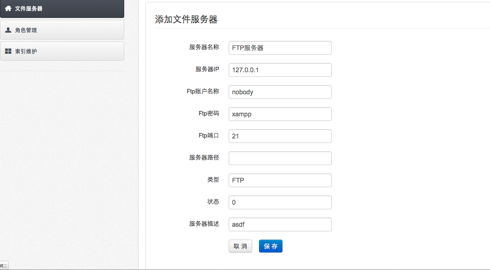

-
- 操作流程
- 点击首页功能菜单［系统维护－系统配置］，打开系统配置。
- 点击［文件服务器］按钮，打开文件服务器配置功能。文件服务器是本系统电子全文存储方式设置，可以采用ftp和本机两种方式。
- 文件服务器的［状态］包括“已启用”和“备用”两种。同时只能有一种方式启用。
- ftp方式
- ［ftp方式］:ftp服务器可以是本机，也可以是其他服务器。
- 点击［修改］按钮，打开ftp参数修改页面，只修改［服务器ip］、［FTP帐户名称］、［FTP密码］。点击［保存］按钮。
- 点击［测试］按钮，可以测试ftp是否连接成功。只有在连接成功，才能正确上传挂接的电子文件。
-

-
- 本机方式
- [本机方式] :这里的本机，不是客户端的本机。而是指本系统发布的服务器。在服务器的硬盘里，创建一个文件夹，作为挂接电子全文的存储。
- 点击［修改］按钮，打开本机参数修改页面，只修改［服务器路径］，例如： d:\archivedoc。点击［保存］按钮。
- 本机方式不需要测试。